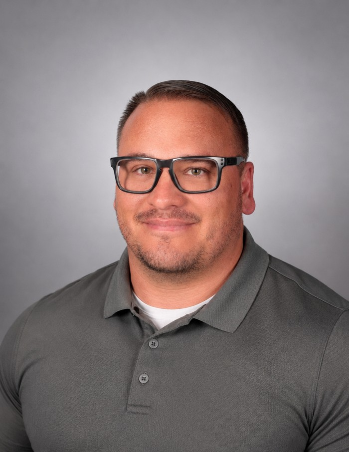

Enterprise GIS
ArcGIS Enterprise, Portal, ArcGIS Online, ArcGIS Pro, ArcGIS Monitor, and Distributed Collaboration. Administration, upgrades, migrations, health checks, and service management.
I connect people, data, and technology to make complex work easier.
I'm Keith Ornbaum, with more than 18 years of experience in GIS, location intelligence, enterprise systems, and data management. My skills span databases, workflow automation, application design, and turning complex information into practical tools. I bring a collaborative approach and a curiosity for technology, personal finance, and investing, with a focus on continued learning and building tools that help everyday people.

My work spans enterprise GIS administration, database support, application configuration, and workflow automation. I help teams connect their data and systems so they can maintain dependable services and put information to work.
My experience includes enterprise upgrades and migrations, health checks, monitoring, backup automation, data integration, and supporting maps and applications. Clear documentation, training, and collaboration are part of how I help teams sustain the work.
I start by understanding the people, the problem, and the existing workflow. From there, I focus on practical improvements, testing, and communication that makes the result easier to use and maintain.
I enjoy working with peers, sharing what I learn, and turning complex technical questions into clear next steps. Continued learning and constructive feedback are central to my approach.
Different organizations bring different needs. My GIS experience spans these sectors, with a shared focus on useful data, dependable systems, and clearer workflows.
ArcGIS Enterprise, Portal, ArcGIS Online, ArcGIS Pro, ArcGIS Monitor, and Distributed Collaboration. Administration, upgrades, migrations, health checks, and service management.
Microsoft SQL Server enterprise geodatabases, SQL views, backup and restore workflows, ETL, ArcPy, and the ArcGIS API for Python.
Experience Builder, Dashboards, Instant Apps, StoryMaps, web maps, documentation, and training that make information easier to use.
A Bachelor of Science in Information Systems, with a focus on Multimedia & Visual Communication, from the University of Phoenix, alongside Computer Drafting & Design studies at ITT Technical Institute.
Over the years, I have developed a strong interest in personal finance and investing: understanding cash flow, balancing debt and savings, and learning how everyday decisions connect with long-term goals.
Those interests helped inspire ClearWorth. I wanted to use what I have learned to create apps and tools that help everyday people organize information and make more informed decisions.
Explore ClearWorth ↗Family and more than twelve years of youth sports coaching have shaped my commitment to preparation, communication, accountability, and persistence.
My personal projects give me another place to learn, experiment, and share practical ideas. This site brings my career, interests, and ongoing work together for colleagues, potential employers, and anyone curious about what I build.
Read the journey to ClearWorth ↗Interested in my experience, a project, or a shared technical challenge? You can find my professional profile on LinkedIn and explore my work here.
Professional background: LinkedIn · GeoMarvel team